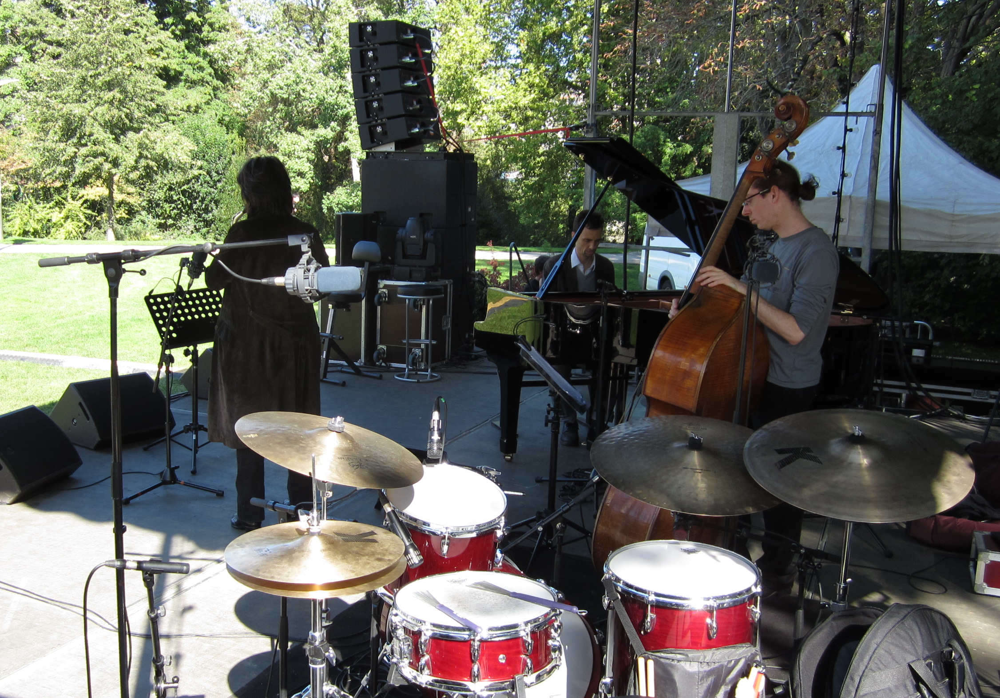
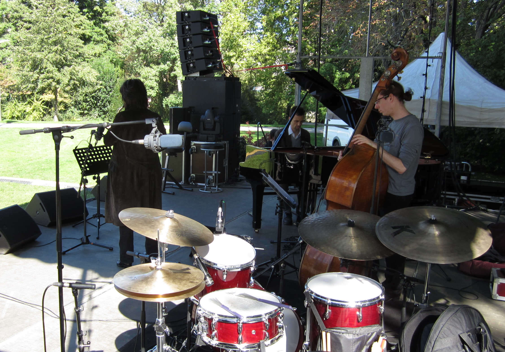

Luc Isenmann
Batteur de Jazz Contemporain – Improvisateur et enseignant
Luc Isenmann - Batteur de Jazz, improvisateur et enseignant

Biographie (FR)
Luc Isenmann est une figure du jazz contemporain. Formé au CRR de Strasbourg puis au CNSM de Paris, élève de Daniel Humair, il développe une carrière de sideman à Paris depuis 1997. Suite à un prix de soliste au concours d’Avignon en 1998, il est repéré par Aldo Romano, qui l’appelle pour divers remplacements. Très marqué par ses rencontres lors de master-class avec Paul Motian, Max Roach, Roy Haynes, Peter Erskine, Dave Holland, Richie Beirach, Dave Liebman, Joe Lovano, il joue en big bands sous la direction de Carla Bley, Maria Schneider, Bob Brookmeyer, Jim McNeely.
Il a collaboré avec de nombreux musiciens français tels que Michel El Malem (Marc Copland, Romain Pilon, Stéphane Kerecki) avec lequel il obtient le prix de l’Académie du jazz (prix du meilleur disque français 2012) pour son album « Reflets », Gary Brunton (Pee Bee et Brunt’Off), David Patrois/Jean-Charles Richard Trio, Antoine Delaunay/Mélanie Dahan 5tet, Benjamin Moussay Trio, Géraldine Laurent/Laurent de Wilde, Fred Favarel Trio et Pierre de Bethmann.
Nombreuses tournées internationales (Maroc, Soudan, Ukraine, Russie, Chine, Bolivie, et dans toute l’Europe).
Il joue également aux côtés de musiciens américains tels Greg Osby, Marc Copland, Jerry Bergonzi, Jacky Terrasson, Ricky Ford, Sarah Morrow, Hal Singer, .
Il se produit régulièrement en solo au Musée de la Musique (Philharmonie de Paris).
Luc Isenmann enseigne la batterie jazz au Conservatoire de Strasbourg, niveau Dem et Dnspm (HEAR, Haute Ecole des Arts du Rhin).
Biography (EN)
Luc Isenmann is a leading figure in contemporary jazz. Trained at the CRR in Strasbourg and then at the CNSM in Paris, a student of Daniel Humair, he has been developing a career as a sideman in Paris since 1997. Following a soloist prize at the Avignon competition in 1998, he was spotted by Aldo Romano, who called him in for various replacements. Deeply influenced by his encounters during masterclasses with Paul Motian, Max Roach, Roy Haynes, Peter Erskine, Dave Holland, Richie Beirach, Dave Liebman, Joe Lovano, he plays in big bands under the direction of Carla Bley, Maria Schneider, Bob Brookmeyer, Jim McNeely.He has collaborated with numerous French musicians such as Michel El Malem (Marc Copland, Romain Pilon, Stéphane Kerecki), with whom he won the Académie du Jazz Prize (Best French Album 2012) for his album "Reflets", Gary Brunton (Pee Bee and Brunt'Off), David Patrois/Jean-Charles Richard Trio, Antoine Delaunay/Mélanie Dahan 5tet, Benjamin Moussay Trio, Géraldine Laurent/Laurent de Wilde, Fred Favarel Trio, and Pierre de Bethmann.
Numerous international tours (Morocco, Sudan, Ukraine, Russia, China, Bolivia, and throughout Europe).
He also plays alongside American musicians such as Greg Osby, Marc Copland, Jerry Bergonzi, Jacky Terrasson, Ricky Ford, Sarah Morrow, Hal Singer.
He regularly performs solo at the Musée de la Musique (Philharmonie de Paris).
Luc Isenmann teaches jazz drums at the Strasbourg Conservatory, at Dem and Dnspm level (HEAR, Haute Ecole des Arts du Rhin).
Prochains concerts
- 18 septembre 2025 : Antoine Delaunay/Mélanie Dahan Quintet - Orléans
- 21 septembre 2025 : Claudio Pallaro Quartet - Antony
- 12 octobre 2025 : Antoine Delaunay/Mélanie Dahan Quintet - Maintenon
- 4 novembre 2025 : Antoine Delaunay/Mélanie Dahan Quintet - St Jean d'Angély
- 7 novembre 2025 : Antoine Delaunay/Mélanie Dahan Quintet - Courville/Eure
- 16 novembre 2025 : Antoine Delaunay/Mélanie Dahan Quintet - Jazz sur Camembert
- 29 janvier 2026 : Antoine Delaunay/Mélanie Dahan Quintet - Les Bascules, Paris
- 14 mars 2026 : Gary Brunton's PeeBee - Antony
Musique
Galerie Photos

 

Contact / Booking
Email : booking@lucisenmann.com
Instagram : @lucisenmann
Facebook : @lucisenmann
HEAR Strasbourg / CRR Strasbourg